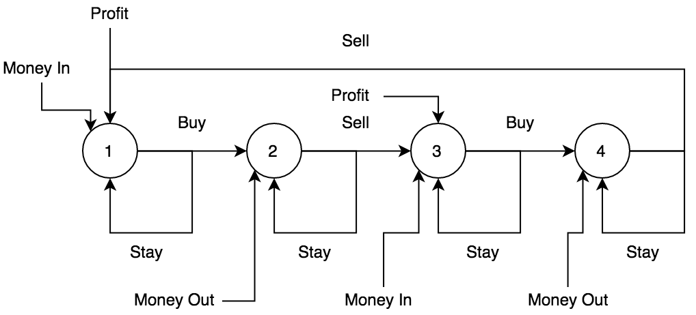

Best Time to Buy and Sell Stock I/II/III/IV
Links: Best Time to Buy and Sell Stock / Best Time to Buy and Sell Stock II / Best Time to Buy and Sell Stock III / Best Time to Buy and Sell Stock IV
Problem description
Best Time to Buy and Sell Stock
Say you have an array for which the ith element is the price of a given stock on day i.
If you were only permitted to complete at most one transaction (i.e., buy one and sell one share of the stock), design an algorithm to find the maximum profit.
Note that you cannot sell a stock before you buy one.
Example 1:
Input: [7,1,5,3,6,4]
Output: 5
Explanation: Buy on day 2 (price = 1) and sell on day 5 (price = 6), profit = 6-1 = 5.
Not 7-1 = 6, as selling price needs to be larger than buying price.
Example 2:
Input: [7,6,4,3,1]
Output: 0
Explanation: In this case, no transaction is done, i.e. max profit = 0.
Best Time to Buy and Sell Stock II
Say you have an array for which the ith element is the price of a given stock on day i.
Design an algorithm to find the maximum profit. You may complete as many transactions as you like (i.e., buy one and sell one share of the stock multiple times).
Note: You may not engage in multiple transactions at the same time (i.e., you must sell the stock before you buy again).
Example 1:
Input: [7,1,5,3,6,4]
Output: 7
Explanation: Buy on day 2 (price = 1) and sell on day 3 (price = 5), profit = 5-1 = 4.
Then buy on day 4 (price = 3) and sell on day 5 (price = 6), profit = 6-3 = 3.
Example 2:
Input: [1,2,3,4,5]
Output: 4
Explanation: Buy on day 1 (price = 1) and sell on day 5 (price = 5), profit = 5-1 = 4.
Note that you cannot buy on day 1, buy on day 2 and sell them later, as you are
engaging multiple transactions at the same time. You must sell before buying again.
Example 3:
Input: [7,6,4,3,1]
Output: 0
Explanation: In this case, no transaction is done, i.e. max profit = 0.
Best Time to Buy and Sell Stock III
Say you have an array for which the ith element is the price of a given stock on day i.
Design an algorithm to find the maximum profit. You may complete at most two transactions.
Note: You may not engage in multiple transactions at the same time (i.e., you must sell the stock before you buy again).
Example 1:
Input: [3,3,5,0,0,3,1,4]
Output: 6
Explanation: Buy on day 4 (price = 0) and sell on day 6 (price = 3), profit = 3-0 = 3.
Then buy on day 7 (price = 1) and sell on day 8 (price = 4), profit = 4-1 = 3.
Example 2:
Input: [1,2,3,4,5]
Output: 4
Explanation: Buy on day 1 (price = 1) and sell on day 5 (price = 5), profit = 5-1 = 4.
Note that you cannot buy on day 1, buy on day 2 and sell them later, as you are
engaging multiple transactions at the same time. You must sell before buying again.
Example 3:
Input: [7,6,4,3,1]
Output: 0
Explanation: In this case, no transaction is done, i.e. max profit = 0.
Best Time to Buy and Sell Stock IV
Method
Best Time to Buy and Sell Stock
Ignore about the concept of “buy” and “sell”. This question is actually asking about finding each increasing subarray. The solution is very simple in this way.
Best Time to Buy and Sell Stock II
This problem can be solved by greedy approach. However, the description is somehow vague and therefore, the directly solution is extremely straightforward: add all positive difference to profit. That’s it.
The difference between this problem and previous problem is that in the previous problem, one “transaction” can be done, which suggests that the purpose is to find largest gap between two numbers in array. And in this problem, since no limits of “transaction”, the purpose turns to simply find each positive gap between adjacent numbers.
Best Time to Buy and Sell Stock III
Use a state machine to describes the problem statement.

- State 0: do nothing or buy stock
- State 1: sell stock or hold purchased stock
- State 2: do nothing or buy stock again
- State 3: sell stock again or do nothing
Finally, it returns the final state s3. If no purchase happened (no profit), then the state machine
will directly return -price[0]. Compare the state machine result and return 0 if state machine returns a
negative value.
Best Time to Buy and Sell Stock IV
There are two approaches to solve this problem (actually they are same): Dynamic programming and State machine. The choice is up to which one is understandable.
However, to avoid MLE (happens when k and array are extreme large), some corner cases should be fixed
first. If k > prices.length * 2, then the problem can be converted to Best Time to Buy
and Sell Stock II. The reason is that in given array, it can at most complete 2 * k
operations since only one action can be done at one time.
Dynamic programming
State transition:
[i, j] = max([i, j - 1], prices[j] - prices[j'] + [i - 1, j'])
i: ith transaction
j: prices[j], index in int array price
j': in range of [0, j-1]
=> [i, j] = max([i, j - 1], prices[j] + max([i - 1, j'] - prices[j'])) (efficient for looping)
dp[0, j] = 0
dp[i, 0] = 0
The idea is to find out max profit from previous transaction and compare to current operation (buy/sell, or do nothing). This is actually same as state machine.
State machine
It is same as previous problem, which is actually k=2 if use condition in this problem. The state machine
has k * 2 states, and to store them, use a int[] to store the states and
update it.
Code
Best Time to Buy and Sell Stock
/**
* Dynamic programming.
* Similar to max subarray problem.
*
* @param prices int array
* @return max "profit"
*/
public int maxProfit(int[] prices) {
int max = 0, profit = 0;
for (int i = 1; i < prices.length; i++) {
profit = Math.max(0, prices[i] - prices[i - 1] + profit);
max = Math.max(max, profit);
}
return max;
}
Best Time to Buy and Sell Stock II
/**
* Ignore this problem.
*
* @param prices int arr
* @return max profit
*/
public int maxProfit(int[] prices) {
int max = 0;
for (int i = 1; i < prices.length; i++) {
max = prices[i] > prices[i - 1] ? max + prices[i] - prices[i - 1] : max;
}
return max;
}
Best Time to Buy and Sell Stock III
/**
* Use a state machine to describes the problem statement.
* State 0: do nothing or buy stock
* State 1: sell stock or hold purchased stock
* State 2: do nothing or buy stock again
* State 3: sell stock or do nothing
* Finally, return the final state s3. If no purchase then it will directly return -price[0].
* If final result is negative, then return 0.
*
* @param prices price int array
* @return max profit
*/
public int maxProfit(int[] prices) {
/* Corner case */
if (prices.length == 0) {
return 0;
}
int s0 = -prices[0], s1 = Integer.MIN_VALUE, s2 = Integer.MIN_VALUE, s3 = Integer.MIN_VALUE;
for (int i = 1; i < prices.length; i++) {
s0 = Integer.max(s0, -prices[i]); // state 0
s1 = Integer.max(s1, s0 + prices[i]); // sell stock -> turn to state 1 or do nothing
s2 = Integer.max(s2, s1 - prices[i]); // second buy -> turn to state 2 or do nothing
s3 = Integer.max(s3, s2 + prices[i]); // final state, sell or do nothing
}
return Integer.max(s3, 0); // if the stock price is monotonically decreasing, return 0
}
Best Time to Buy and Sell Stock IV
Dynamic programming
/**
* Dynamic programming with table.
* [i, j] = max([i, j - 1], prices[j] - prices[j'] + [i - 1, j'])
* i: ith transaction
* j: prices[j], index in int array price
* j': in range of [0, j-1]
* => [i, j] = max([i, j - 1], prices[j] + max([i - 1, j'] - prices[j'])) (efficient for looping)
* dp[0, j] = 0
* dp[i, 0] = 0
*
* @param k at most k transactions
* @param prices int array
* @return max profit
*/
public int dp(int k, int[] prices) {
/* Corner case */
if (prices.length < 2) {
return 0;
}
/* Corner case: compare between current and previous value in array */
if (k >= prices.length / 2) { // k is sufficient for comparing each adjacent value in array
int max = 0;
for (int i = 1; i < prices.length; i++) {
if (prices[i] - prices[i - 1] > 0) {
max += prices[i] - prices[i - 1];
}
}
return max;
}
int[] r1 = new int[prices.length];
int[] r2 = new int[prices.length];
for (int i = 0; i < k + 1; i++) {
int base = -prices[0];
for (int j = 0; j < r1.length; j++) {
r2[j] = Integer.max(r2[j - 1], prices[j] + base);
base = Integer.max(base, r1[j] - prices[j]);
}
/* Reduce memory usage */
for (int j = 0; j < prices.length; j++) {
r1[j] = r2[j];
r2[j] = 0;
}
}
return r2[prices.length - 1];
}
State machine
/**
* Use a state machine to save state.
* The length of state is 2 * k, since each k representing a buy and sell state.
*
* @param k at most k transactions
* @param prices given int array
* @return max profit
*/
public int stateMachine(int k, int[] prices) {
/* Corner case */
if (k == 0 || prices.length < 2) {
return 0;
}
if (k >= prices.length / 2) {
int max = 0;
for (int i = 1; i < prices.length; i++) {
if (prices[i] - prices[i - 1] > 0) {
max += prices[i] - prices[i - 1];
}
}
return max;
}
int[] state = new int[k * 2];
state[0] = -prices[0];
for (int i = 1; i < state.length; i++) {
state[i] = Integer.MIN_VALUE;
}
for (int i = 1; i < prices.length; i++) {
for (int j = 0; j < state.length; j++) {
/* State transition */
if (j == 0) {
state[j] = Integer.max(state[j], -prices[i]);
} else {
state[j] = Integer.max(state[j], (j % 2 == 0 ? state[j - 1] - prices[i] : state[j - 1] + prices[i]));
}
}
}
return Integer.max(0, state[state.length - 1]);
}